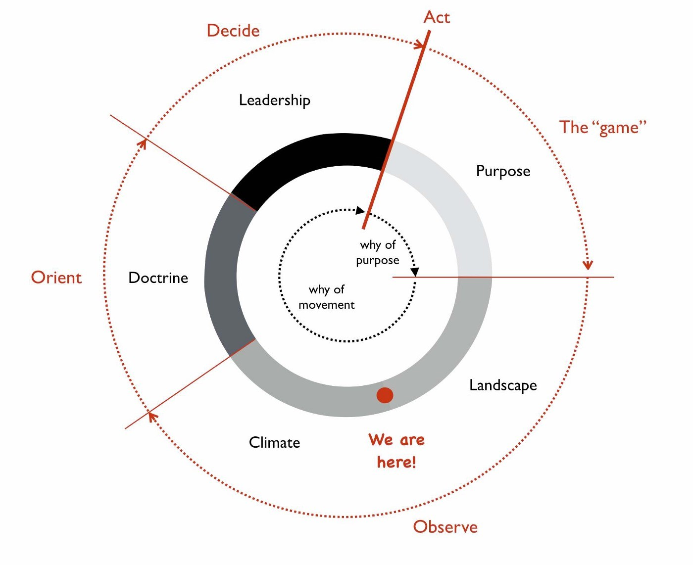
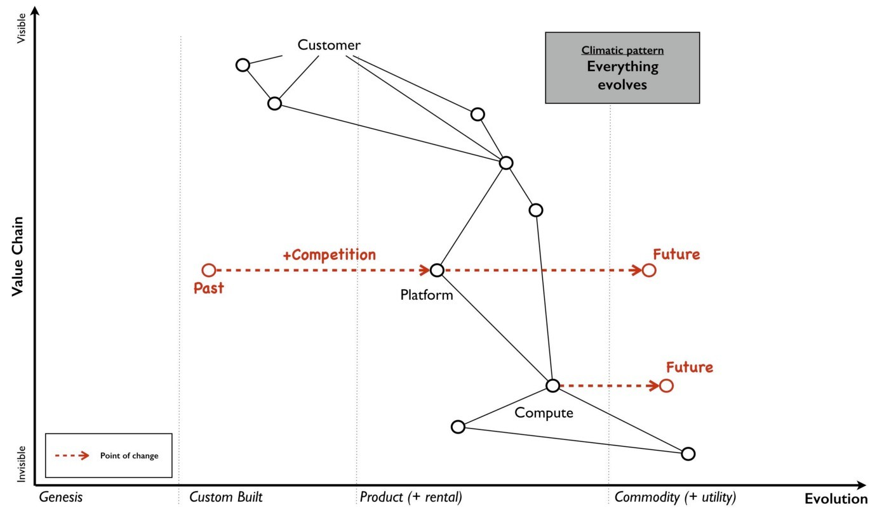
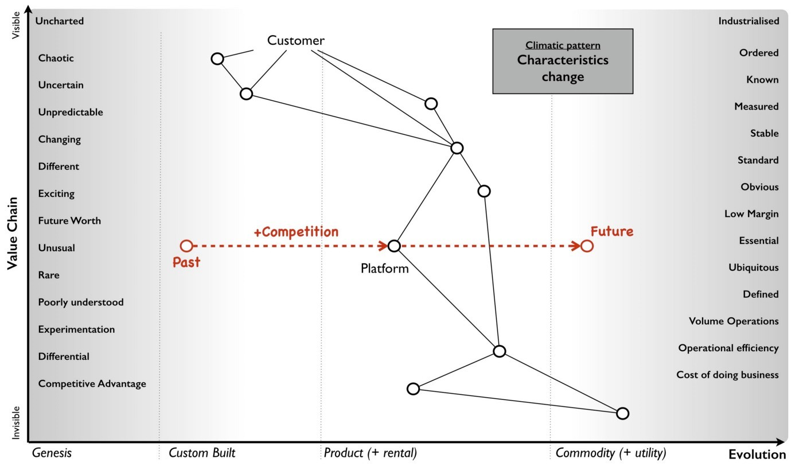
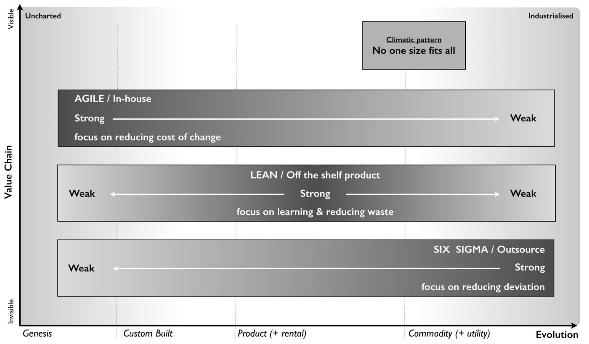
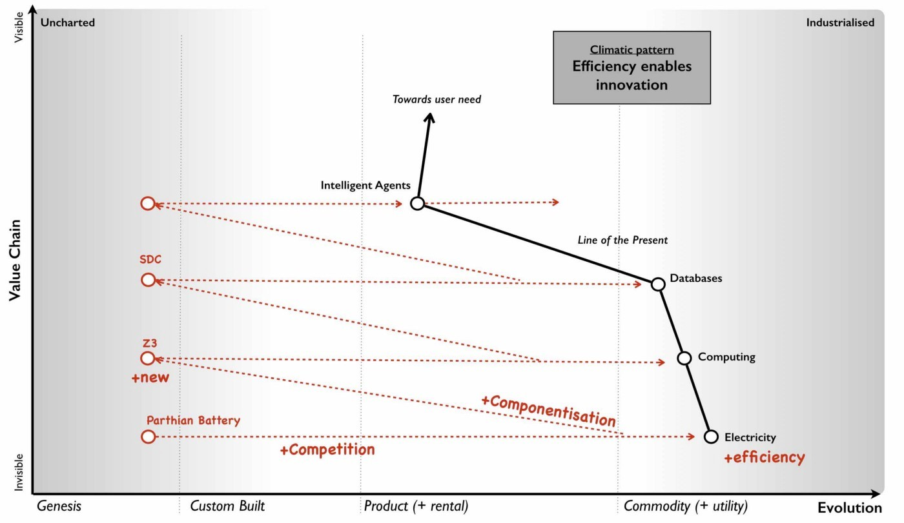
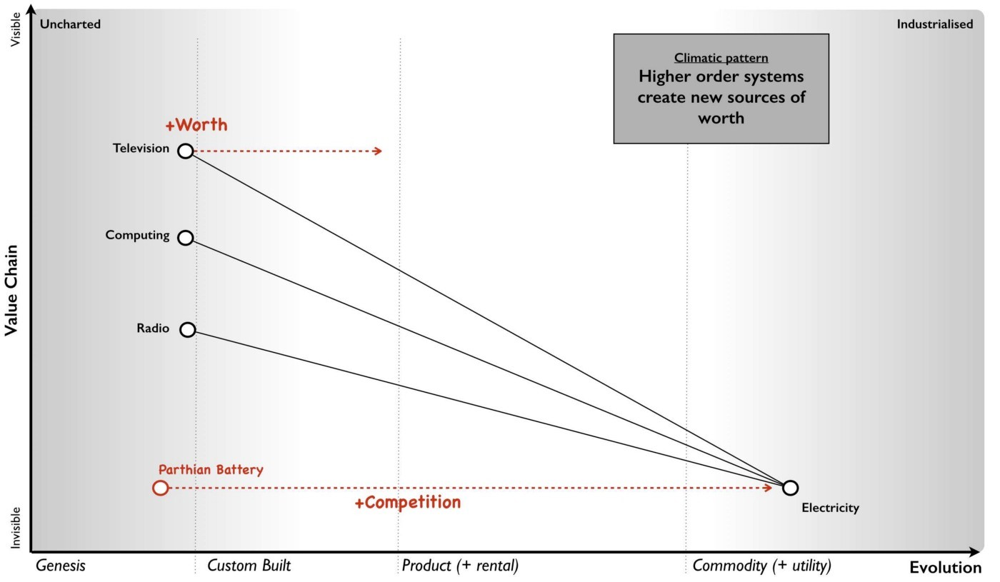
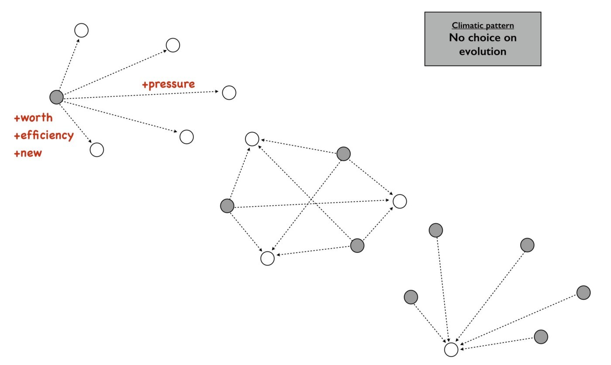
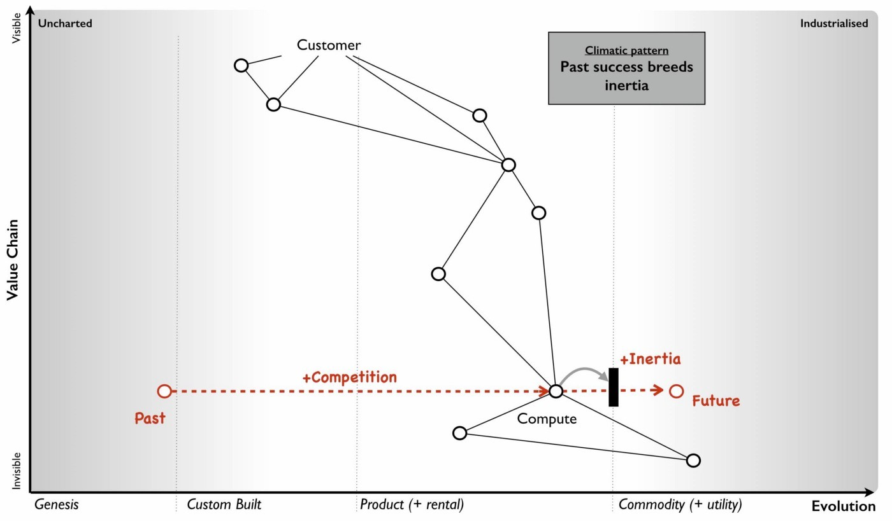
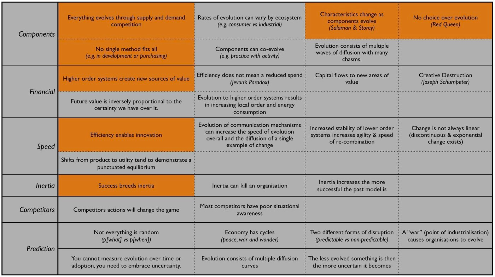
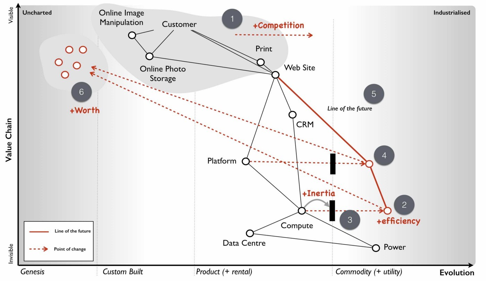

Chapter 3
23 min read
Hurray, we’ve got a map! What now? The purpose of producing a map is to help us to learn and then apply basic climatic patterns, doctrine and context specific forms of gameplay. Maps are our learning and communication tool for discovering these things and enabling us to make better decisions before acting. However, the strategy cycle is iterative and we’re not going to learn all the patterns the first time we use a map any more than we learn everything about Chess in our first game. Instead, like a game of chess then play by play, move by move we’re going to get a little bit better.
This is what happened to me starting in 2005 and even today in 2016, I’m still learning. In this chapter, I’m going to start looping through a single pass of the strategy cycle, see figure 19
Figure 19 — Looping through the strategy cycle.

Climatic patterns are those things which change the map regardless of your actions. This can include common economic patterns or competitor actions. Understanding climatic patterns are important when anticipating change. In much the same way Chess has patterns which impact the game. This includes rules that limit the potential movement of a piece to the likely moves that your opponent will make. You cannot stop climatic patterns from happening though, as you’ll discover, you can influence, use and exploit them. In this section, I’ll go through a number of climatic patterns relevant to business and then we will apply them to our first map.
Climatic pattern: Everything evolves
All components on your map are moving from left to right under the influence of supply and demand competition. This includes every activity (what we do), every practice (how we do something) and every mental model (how we make sense of it). This means that everything has a past and a future. For example, in figure 20, the component described as platform was considered to be a product and in 2005, for an online photo service, this was provided by the LAMP (Linux, Apache, MySQL and Perl) stack. There were other competing product sets out there with different features but few of us would entertain the idea of custom building the lot i.e. with an online photo service then you wouldn’t start by going “we need to build our own novel operating system, our own computing language and our own web server software”. However, roll the clock back further in time and that’s exactly what you would have needed to do.
Figure 20— Everything evolves

Even with this product stack, there was still a lot of stitching required. We were far from the highly standardised world of electricity supply where you simply insert a plug and switch it on. We had installation, configuration, setup, networks and many underlying components that had to fit together to provide a working stack. I would have dearly loved to just walk into the office, metaphorically flip a switch and start coding on some form of utility platform but that wasn’t our world in mid 2005. However, platform was evolving and at some point in the future it would become more of a commodity, even a utility. In much the same way compute would at some point become a utility. This was a subject that we had discussed at Euro Foo in 2004 and within our own company we had already created a system known as the Borg which provided virtual machines on demand. It would only take a small leap from that to the compute utilities described by Douglas Parkhill in his 1966 book, The Challenge of the Computer Utility.
Climatic pattern: Characteristics change
Organisations consist of value chains that are comprised of components that are evolving from genesis to more of a commodity. It sounds fairly basic stuff but it has profound effects because that journey of evolution involves changing characteristics. For example, let us take the genesis of computer infrastructure and wind the clock back to 1943 and the Z3, the first digital computer. The activity was scarce, it was poorly understood and we were still in the process of discovering what a digital computer could do. The act was uncertain as we had little idea of what it could lead to and as such it was unpredictable and rapidly changing. But this activity had the potential to make a difference, it was a source of differential value and competitive advantage. There was however no firm market to speak of, any customers were on as much of a journey of exploration as the suppliers.
Computing infrastructure did turn out to be useful and it started to spread. Custom built systems such as LEO (Lyons Electronic Office) were built and eventually products released (such as the IBM 650) with diffusion of ever more functionally complete systems. By 2005, computing infrastructure was starting to become treated as a commodity with racks of fairly standardised servers. It was increasingly commonplace and its purpose and use was well understood by a large number of people. We were already starting to think less about what a digital computer could do and instead on what we could do with vast numbers of fairly standardised units. In our Borg system, we had even abstracted away the concept of the physical machine to virtual ones which we created and discarded with abandon.
This change of relationship was not unfamiliar to me as I ran an online photo service and could clearly see the same impacts happening with images. As the industry evolved from photo film to digital images then the behaviour of the user was slowly altering in front of us. In the past, every single photo taken was precious and it required some effort including a trip to a photo processing lab. Accidentally taking a shot with the camera lens cap on was met with sighs of disappointment due to the waste of film, the effort of trying to set up that good shot and the inevitable wasted print from the lab. However, the format had become a more digital commodity and so users increasingly took many shots and discarded unwanted ones regularly. The idea of taking and throwing away images with abandon was no longer waste but an expected consequence of taking thousands of them. Ditto virtual machines.
The use of computing infrastructure was also not seen as a differential between companies but instead more of a cost of doing business. Whilst in the very early days, you might have had a press announcement with a CEO that this or that company had bought their first computer, those days were long gone. Even the days where our system admins would take care in picking names for our servers, such as famous Sci-Fi characters or places was disappearing. These servers were no longer pets, they were becoming cattle.
The market itself was becoming more predictable; customer demands for large volumes of more economically efficient units. This single activity had evolved from rare to commonplace, from poorly understood to well defined, from competitive advantage to cost of doing business, from rapidly changing to standardised. Everything evolves from that more uncharted and unexplored space of being rare, constantly changing and poorly understood to eventually industrialised forms that are commonplace, standardised and a cost of doing business. What happened with computers and images had happened with electricity, the nut and bolt and Penicillin — the once marvel drug that became a generic. However, this assumes survival and though everything evolves not everything survives. Given a presumption of survival then the progression and change of characteristics is shown in figure 21 on which I’ve also marked the domains of the uncharted and the industrialised.
Figure 21 — Characteristics change

Since this change is common for all components then I was able to collect a list of characteristics in order to produce the cheat sheet previously shown in figure 17 (chapter 2). Now, you might argue that this is circular because I’m stating the extremes are different using a map which is built with a cheat sheet which assumes that the extremes are different. This is a perfectly reasonable challenge and one which requires me to explain how that evolution axis was created. That subject is an entire chapter of this book and if you wish you should skip ahead to read it (chapter 7 — finding a new purpose). For the time being, it is enough to know that all your components evolve due to competition and as they do so their characteristics change from the uncharted to the industrialised. You cannot stop them evolving if there exists competition around them.
Climatic pattern: No one size fits all
Every large system, whether a line of business, a nation state or a specific IT project contains multiple components. Those components have a relationship with each other but they’re also evolving. As they evolve, their characteristics change from one extreme to another, from the uncharted to the industrialised domain. In order to survive and compete against others you need to manage both of these extremes. You cannot afford to be building your own Thomas Thwaites toaster when a commodity form exists. You cannot hope to compete against Uber by focusing on a range of custom built tyres for your taxis to use.
With any business you need to encourage coherence, co-ordination, efficiency and stability when dealing with the industrialised domain. However, the exploration and discovery of new capabilities in the uncharted domain requires you to abandon these erstwhile virtues for experimentation. Any structure whether a company or a team needs to manage both of these polar opposites. This is known as the Innovation Paradox of Salaman & Storey, 2002. Alas, as I discovered in 2005, the story is even more complex than this because you also have components that are evolving between the extremes and these transitional components have a different set of characteristics and require a third mechanism of management.
The uncharted space is where no-one knows what is wanted which forces us to explore and experiment. Change is the norm here and any method that you use must enable and reduce the cost of change. In this part of the map, I tend to use an Agile approach that has been cut right back to the core principles, a very lightweight version of XP or SCRUM.
Of course, as a component evolves and we start to understand it more then our focus changes. Sometime during the stage of custom built we switch and start to think about creating a product. Whilst we may continue to use underlying techniques such as XP or SCRUM, our focus is now on reducing waste, improving measurements, learning and creating that first minimal viable product. We start to add artefacts to our methodology and the activity has more permanence about it as it undergoes this transition. We’ve stopped exploring the uncharted space and started concentrating on what we’ve found. Today, Lean tends to rule the waves here though back in 2005 we were struggling to find something appropriate. The component however will continue to evolve becoming more widespread and defined as it approaches the domain of industrialised volume operations. Our focus again switches but this time to mass production of good enough which means reducing deviation. At this point, Six Sigma along with formalised frameworks such as ITIL then start to rule the waves. Any significant system will have components at different stages of evolution. At any one moment in time, there is no single method that will fit all.
Unfortunately, most companies have no map of their environment. They are unaware of these climatic patterns other than in a vague sense and so they tend to plummet for a one size fits all method. The arguments are usually supported by some sort of outcome bias i.e. this method worked well for this particular project and hence it is assumed that it works well for every project. All of these project methods have their devotees and so regular arguments of agile vs lean, lean vs six sigma or agile vs six sigma break out along with finger wagging at failed examples of the “other approach”. This is usually defended against with counter accusations and claims that the approach was not used in the right way.
Invariably there are endless attempts to create a new magic one size fits all method by trying to make a single approach all encompassing or marrying together different stages e.g. lean six sigma or agile lean or prince agile. This has been going on in one guise or another for a considerable amount of time and I have little doubt it will continue until people come to terms with the simple issue that there’s no one size fits all. For reference, I’ve shown the suitability of project methodologies with evolution in figure 22.
Figure 22 — No one size fits all

But this is not just a project methodology issue, it applies to other fields. Purchasing requires a use of a VC (venture capital) based approach in genesis, switching to more outcome and COTS based approach during transition and then more unit based approaches during the industrialised domain. Hence any large system, whether a company or even a Government needs to use multiple purchasing methods as appropriate. Equally, genesis is more suited to in-house development whereas the industrialised can be safely outsourced. Even the approaches to budgeting are vastly different from investment accounting to product P&Ls to activity based cost control. Whether it’s finance or IT or marketing, there is no single magic method.
Climatic pattern: Efficiency enables innovation
The story of evolution is complicated by the issue that components not only evolve but enable new higher order systems to appear. Standardised electricity supply paved the way for all manner of things from televisions to computing. These things in turn have evolved. Genesis begets evolution begets genesis.
In the Theory of Hierarchy, Herbert Simon showed how the creation of a system is dependent upon the organisation of its subsystems. As an activity becomes industrialised and provided as ever more standardised and commodity components, it not only allows for increasing speed of implementation but also rapid change, diversity and agility of systems that are built upon it. In other words, it’s faster to build a house with commodity components such as bricks, wooden planks and plastic pipes than it is to start from first principles with a clay pit, a clump of trees and an oil well. The same phenomenon occurs in biology i.e. the rapid growth in higher organisms and the diversity of life is a function of the underlying components. The simplicity of standard building blocks allows higher orders of complexity. But those standard building blocks didn’t appear out of nowhere, they started as something novel and they evolved. Genesis begets evolution begets genesis.
This doesn’t mean that change stops with the standard components. Take for example, brick making or electricity provision or the manufacture of windows, there is a still significant amount of improvement hidden behind the “standard” interface. However, the “standard” acts as an abstraction layer to this change. Just because my electricity supplier has introduced new sources of power generation (wind turbine, geothermal) doesn’t mean I wake up one morning to find that we’re moving from 240V 50Hz to something else and I have to rewire the house. If that constant operational improvement in electricity generation was not abstracted then all the consumer electronics built upon this would need to continuously change — the entire system would either collapse in a mess or at the very least technological progress would be hampered. It’s no different again with biology. If there weren’t underlying components from DNA to RNA messaging to transcription to translation to even basic cell structures within more complex organisms, then you and I would never have appeared in the time frame.
Now as a component evolves to a more standard, good enough commodity then to a consumer any improvement becomes increasingly hidden behind the interface. Any changes are ultimately reflected as more efficiency or a better price or quality of service but the activity itself for all sense of purpose will remain as is e.g. a standard but cheaper brick or power supply or wooden plank. There are exceptions to this but it usually involves significant upheaval due to all the higher order systems that need to change and hence Government involvement is often required e.g. changing electricity standards, changing currency or even simply switching from analogue to digital transmission of TV.
Hence, activities evolve to become more industrialised and those commodities (or utilities) enable higher order systems that consume them and any operational improvement to the component is increasingly hidden behind its interface. Change can happen but it’s costly and ultimately we aim to reduce all forms of deviation.
For example, electricity generation appeared in the past and then evolved through competition becoming more industrialised. This in turn through componentisation effects enabled higher order systems such as computing which enabled new industries serving new user needs. Computing in turn evolved through competition enabling the creation of novel higher order systems such as databases which enabled new industries. And so the process continues until the modern day where we have intelligent machine agents. I’ve summarised this in figure 23, adding a line of the present (i.e. where we are today) but also highlighting the past (where we were) and adding the fairly obvious anticipation that intelligent agents will themselves become commodity like (where we will be). Without a long history of more industrialised forms offering highly efficient components for once magical wonders then I would never have had the ability nor the capital to write this story on a digital computer in a word processor.
Figure 23 — Efficiency enables innovation

In the above map, I’ve reduced the actual number of the components for the reason of simplicity. Obviously not everything becomes a component of something else but mechanical, electrical and even IT systems commonly do. IT is no exception to the effects of evolution and componentisation. The modern day phenomenon of cloud computing represents the evolution of many IT activities from product to utility services and the provision of good enough, standard components is causing a rapid rate of development of higher order systems and activities. Many services we consume from Netflix to DropBox are unlikely to have been practical without commodity and utility computing infrastructure. However, the story of evolution doesn’t simply stop at efficiency and the consequential enablement in building higher order systems. It also has an impact on value.
Climatic pattern: Higher order systems create new sources of worth
An idea is something with social value and it is the implementation of that idea as a new act which can create economic value when that act is useful. This process of transformation from social to economic value is known as commodification. It describes a modification of relationships, formerly untainted by commerce, into commercial relationships.
As that activity evolves, various iterations of it will diffuse throughout society and the activity will become more common in its market. Eventually, these goods or services that have economic value become indistinguishable in terms of attributes (uniqueness or brand) in the eyes of the market. This evolution is the movement of a market from differentiated to undifferentiated price competition and from monopolistic to perfect competition where the differential benefit of the act reduces towards zero. This is the process of commoditisation.
I specifically use two different terms — commodification and commoditisation — to describe these two very different changes. They are not the same, try not to confuse them.
At the same time that the differential benefit of a component declines, it also becomes more of a necessity and a cost of doing business. For example, the once wonder and differential of telephony has become a necessity for most. This creates a situation where the unit value of something maybe declining but the total revenue generated is increasing due to volume. Alongside this, we also see the cost of production of each unit change as it evolves. For example, the cost of production per unit for a standard phone is vastly less today than the cost of production of the first ever phones. As a result, the transitional domain (i.e. the time of products) between the extremes of the uncharted and the industrialised, also tends to be associated with the most profitable in an industry. This wealth generation is due to a combination of high unit value, increasing volume and declining production costs. As a rule of thumb: -
The uncharted domain is associated with high production costs, high levels of uncertainty but potentially very high future opportunity. Being first is not always the best option due to the burden and risks of research and development.
The transitional domain is associated with reducing uncertainty, declining production costs, increasing volumes and highest profitability. However, whilst the environment has become more predictable, the future opportunity is also in decline as the act is becoming more widespread, well understood and well defined. So at the same time we reach the zenith of wealth creation the future is looking decidedly less rosy for the industry itself.
The industrialised domain is associated with high certainty, high levels of predictability, high volumes, low production costs and low unit margin. The activity is not seen as a differential but an expected norm, it has become commonplace. Those activities that have evolved to this state (e.g. nuts and bolts) are seen as having a minimal differential effect. They are not associated with high future opportunity except in early stage replacement of any existing product industry. Their future is seen as one of stable and increasingly low margin revenues that may nevertheless be significant due to volume.
However, along with this change of value the more industrialised components enable new higher order systems. These systems are themselves future sources of worth and wealth generation. Hence, as electricity became more of a utility it enabled new sources of future worth such as television, computing and radio which then evolved to become significant. The downside, is those higher order systems are uncertain and without a crystal ball then you do not know which will be successful. Standard electricity supply enabled all manner of novel things which took a one way trip to the dustbin from Thomas Edison’s electric pen to Gaugler’s refrigerating blanket. Before you laugh, the idea of people sitting in front of a box to watch moving pictures probably sounded more ridiculous than a blanket that keeps you cool on a warm night. We have the benefit of hindsight.
Though we cannot say what new higher orders systems will become sources of significant wealth generation, we can say that higher order systems create new sources of worth — figure 24.
Figure 24 — Higher order systems create new sources of worth

Climatic pattern: No choice on evolution
As components within your value chain evolve then unless you can form some sort of cartel and prevent any new entrants then some competitors will adapt to use it whether utility computing, standard mechanical components, bricks or electricity. The benefits of efficiency, faster creation of higher order systems along with new potential sources of worth will create pressure on others to adapt. As more adopt the evolved components then the pressure on those who remain in the “old world” increases until it is overwhelming. In figure 25, a company (in grey) adapts creating pressure on all the others to adapt. As more adapt, the pressure on the remaining companies increase.
Figure 25 — No choice on evolution

This effect is known as Van Valen’s “Red Queen Hypothesis” and it is the reason why we don’t see your average company building its own generators from scratch to supply their own electricity. There exists a secondary impact of the Red Queen which is it limits one organisation (or in biology one organism) from taking over the entire environment in a runaway process. If for example, only Ford had ever introduced mass production with every other good being entirely hand-made then not only every car would be a Ford today but so would every TV, every Radio and every Computer. However, those practices spread and other industries adapted hence the advantage that Ford created was diminished.
Climatic pattern: Past success breeds inertia
The Red Queen might force organisations to adapt but this process is rarely smooth — the problem is past success. For example, let us take a component evolving from product to more of a utility and let us assume that you are a supplier of that product. As mentioned in the above section on worth, the transitional domain (i.e. the time of products) is associated with the highest profitability for an industry. Despite any pressure to adapt, you and your industry are likely to resist its industrialisation and your enjoyment of such wealth creation. You want to stay exactly where you are. This resistance to movement is known as inertia — see figure 26. Both consumers and suppliers exhibit various forms of inertia due to past success in either supplying or using a product.
Figure 26 — Past success breeds inertia

It is almost always new entrants who are not encumbered by past success that initiate the change. Whilst VMware CEO Pat Gelsinger might state that Amazon as a “company that sells books” shouldn’t beat VMware and its partners in infrastructure provision, it is precisely because Amazon was not encumbered by an existing business model that it could so easily industrialise the computing infrastructure space.
Naturally, the initial reaction to the change is skeptical despite any latent frustrations of consumers with the costs associated with past models. However, some consumers — usually new entrants themselves entering into other industries — start to adopt the more evolved components because of the benefits of efficiency, agility and ability to build higher order systems of value. The Red Queen kicks in, pressure mounts for others to adopt and what started with a trickle suddenly becomes a raging flood. The resistance to change of existing suppliers will still continue until it has become abundantly clear that the past model is going to decline. Unfortunately for those suppliers, by the time this happens it is often too late as the new entrants have dominated the future market. Many past giants don’t survive. This process of new entrants, a trickle of adoption becoming a flood and slow moving past giants due to inertia is common in history.
We’ve now covered in a very superficial way some basic climatic patterns. As we journey through this book we will iterate around the strategy cycle and revisit them, refining as we go along and adding new patterns. It’s worth knowing that there are many economic patterns but I wanted to provide enough for now that we could start to explore our first map.
In figure 27, I’ve provided a list of the common economic patterns that we will cover in this book. Those marked in orange, we’ve just skimmed over. I’ve also categorised these patterns into whether they mainly influence :-
Figure 27 — Climatic Patterns

Now let us take the same step that I did back in 2005 and apply some of these basic patterns to my first map which I’ve highlighted in red — see figure 28.
Figure 28 — First map with patterns

So back in 2005, I was able to anticipate that: -
Point 1 — Our online photo service was moving more into the product stage of wealth generation. What this meant was it was going to become much easier for others to create a competing service around online photos and there were likely to be some big players in the space. This was already happening and our diversified focus might have enabled us to “survive” but we were rapidly falling behind competitors. We were doing well because everyone was doing well but on a relative basis we were small fry and unless we refocused here it wasn’t going to get better. We need to either invest or find some new angle and some new differentiator. However, I had to be mindful of the fact that we lacked the financial muscle of others and any investment in something novel would be a gamble.
Point 2 — Compute was likely to become more of a utility. I didn’t know quite when but I had signals that this transformation was going to happen soon especially given a company like ours could create our own internal private utility (or what is now called a private Cloud). Compute was a massive industry with huge profitability and revenues. Someone was likely to attack it. That someone would not be encumbered by an existing product or rental model. I honestly expected it was going to be Google but it was Amazon that moved quickly.
Point 3 — There would be resistance to the change (i.e. inertia) of compute becoming a utility. That inertia would exist in both suppliers of hardware and rental services along with their customers. Regardless, that component was going to evolve and companies would be under pressure to adopt. The first movers would likely consist of unencumbered companies e.g. startups.
Point 4 — What was going to happen to compute was going to happen to coding platforms. This was another area that there was considerable revenue and profitability to attack. All those “yak shaving” tasks (a term used to describe an unpleasant and unnecessarily repeated activity) such as configuration, setup and installation would disappear. We were going to enter a future world where I could just code and deploy.
Point 5 — These utility coding platforms would eventually run on utility compute environments. We could anticipate a “line of the future” where the relationships between components remained the same but the manner in which they were provided differed.
Point 6 — The transition from product to utility for both compute and platform was going to enable all sorts of novel higher order systems to be created rapidly. I have no idea what these would be but within them there would exist many new sources of worth along with many more failed efforts. Everything novel is a gamble.
I sat in the boardroom looking at the huge map that I had created with James’ help. It was far more complex than the simplified version above and used slightly different terms for evolution. What was noticeable was for the first time in my business life then I was able to have a conversation about what we thought was going to change without resorting to popular memes and hand waving. Had you been in that room, you might have disagreed with how we had positioned the pieces or the patterns we saw but at least we could have had a good discussion about this. Our assumptions were visibly on the map not locked away in our minds. We had a common language through which we could use to discuss the future and collaborate over.
It felt exciting but also nerve wrecking. We were talking about fundamental changes to the computing industry starring us in the face with what seemed like blinding obviousness. I had a visual means of demonstrating what Nicholas Carr had described in his exceptional 2003 paper on “Does IT Matter”. As it happens, I was a huge fan of that paper and his subsequent prophetic book and had got into many any argument over it in those years. Most of my peers when I mentioned what I thought were amazing ideas had roundly ridiculed them. Compute it seemed was considered a relationship business, it was all about trust and I didn’t know what I was talking about. I disagreed. One part of this confusion was people had taken the Carr’s book to mean all IT at the same time would industrialise. It was obvious from the map that parts would, at different times and this would enable new things to be built.
Of course, what I now know is that I was only at the beginning of my journey. The rabbit hole gets much deeper. However, climatic patterns were a start and though I could apparently anticipate certain changes, I had no idea if any of this was actually right. I could easily be deluding myself and it certainly felt that I was going against popular opinion. But at the very least, I could discuss it and have those conversations. Undaunted, I decided to carry on. My attention now turned to that next factor which is doctrine.
In chapter 2 I asked you to have a go at mapping something. Well, take that map, look at the common climatic patterns described in figure 27 and have a go at applying them to your map. See what you can anticipate. It helps to get others involved as mapping is fundamentally a communication and learning tool and the best results come from collaborating with others. If you’re mapping an aspect of your company then try and find someone with a different skill-set to yourself i.e. if you’re in finance, go grab someone from IT or operations or marketing.